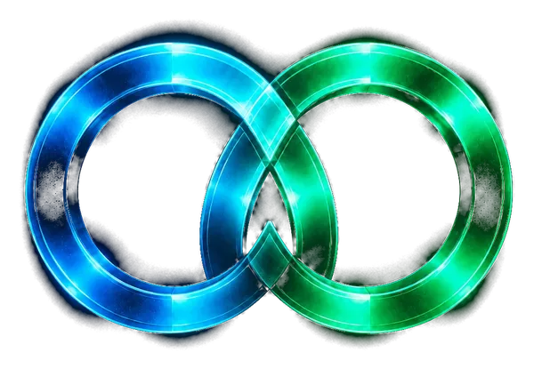

Launch instantly.Trade instantly.Pick your launchpad.
ArcPad on Arc opens a real Uniswap v4 pool the second you launch — locked liquidity, tradeable from block one. Or launch on Argus, Pons (Robinhood Chain) or Pump.fun (Solana) from the same form, with the fee split built in.
Newest launches
A real Uniswap v4 pool is created the instant you launch — the coin's full sellable supply goes straight in, priced against a virtual reserve of the pair token (USDC by default, or $ARCIRCLE / any Arc token you pick). Tradeable on Dexscreener from block one, once indexed.
1% base fee on every trade — most of it back to you as the creator, the rest to the platform. Add up to 2% more at launch, 100% yours. See Docs → Economics for the exact split.
Fixed at 1,000,000,000 tokens every launch. 8% goes to the platform treasury at creation; the remaining 92% is what's actually in the pool, opening at a ≈ $4,350 market cap.
Explore
Every coin launched through ArcPad — on the ArcPad factory, on Argus, on Pons on Robinhood Chain, or on Pump.fun on Solana — read live from the chain.
Price · on-chain
Drawn from every swap in this coin's Uniswap v4 pool on Arc. If Dexscreener lists the pool, you can switch to its chart here.
| Time | Type | USDC | Tokens | Price | Trader | Tx |
|---|---|---|---|---|---|---|
| Loading trades… | ||||||
- Token
- —
- Creator
- —
- Total supply
- 1,000,000,000
- Pool supply
- 920,000,000 (92%)
- Trade fee
- —
- Paired with
- USDC
- Pool
- —
- Launched
- —

Not live$ARCIRCLE is relaunching
The core coin of ARCIRCLE PAD is getting a fresh launch. Until it goes live there is no official contract, price or chart — the new contract address will be posted here and on @ARCIRCLEonArc the moment it launches.
Only trust the contract address published on arcircle.app or by @ARCIRCLEonArc.

Chart
Dexscreener ↗Recent trades
Loading…
Buybacks & burns
Loading…
When the curve's USDC reaches the graduation threshold, $ARCIRCLE moves to a DEX pool — that's when it shows up on Dexscreener.
Price · on-chain
Drawn straight from the curve's own trades on Arc. Dexscreener doesn't index foci bonding curves — it picks $ARCIRCLE up once it graduates to a DEX pool, and this chart switches over automatically.
| Time | Type | USDC | $ARCIRCLE | Price | Trader | Tx |
|---|---|---|---|---|---|---|
| Loading trades… | ||||||
$ARCIRCLE is the core coin of ARCIRCLE PAD. It launched on foci and trades on foci's bonding curve until it graduates — everything ArcPad and CirclePad earn is meant to flow back into it. How the flywheel works →
Launch on ArcPad
Every launch gets a real Uniswap v4 pool in the same transaction — paired with USDC, Arc's own native currency, or with any Arc token you choose.
Portfolio
Every ArcPad coin and $ARCIRCLE in your wallet, and the coins you launched — read live from Arc.
Creators
A preview leaderboard of ArcPad creators, from the last 24 hours of on-chain trading in their coins.
The whitepaper's creator score is planned to combine organic volume, unique buyers and holder retention, with a boost for $ARCIRCLE-paired launches. This preview uses what can be read live today. No rewards are paid from it.
Locker v2Updated regularly
Lock any Arc or Robinhood Chain token until a date you pick. Nobody can move it before then — not even you. You can push the date later, never earlier, and every lock is public on-chain.
Locking a Uniswap v4 LP position? That's in the Liquidity Manager.
New lock
- 1Approve
- 2Lock
- 3Done
Look up a token
See every lock ever made for a token — how much is locked, by whom, and when it unlocks.
Paste a token address, or pick one of your locks below.
Your locks
Locker overview
LiveMost locked
Unlocking in the next 30 days
Runs on ArcLock ArcScan ↗ — no owner, no admin, no fee, no upgrades. You pay only Arc gas. Tokens that take a fee on transfer are recorded at the amount that actually arrives.
Bridge v2Updated regularly
Move USDC between Arc and other chains. It's Circle's own Cross-Chain Transfer Protocol: native USDC is burned on one side and minted on the other — no wrapped tokens, no pools, and Circle delivers it on the other side so you don't need gas there.
- Transfer fee
- —
- Delivery on Arc
- —
- Most you'll pay
- —
- Time
- —
- Switch network
- Approve USDC
- Bridge
Your USDC goes straight to Circle's CCTP contracts — ARCIRCLE PAD never holds it and takes no fee. Fees are Circle's, deducted from the amount you send; you only pay gas on the chain you send from.
Token Scanner v4Updated regularly
Paste any token on Arc, Robinhood Chain or Solana. The scanner reads who really controls it, tries sells at three sizes, checks where it trades and who holds it — then sums it up in one score, with critical flags and how sure it is. It reads the chain; it can't promise a token is safe.
What it checks
- ContractIs it a standard token? Is the source code published? Can one wallet swap its code? Does it share code with a flagged token, or hide a self-destruct?
- ControlWho owns it — a wallet, a multisig or a timelock — and can they still mint, pause, block wallets or change fees? Is another admin left after a renounce?
- TradingDry-run buys and sells at three sizes, a brand-new buyer selling, and two sells in a row — does it go through, and how much is taken?
- MarketWhere it trades, how deep and how locked the pool is, whether people really sell, who does the trading, and copycats with the same ticker.
- HoldersHow spread out the supply is, wallets that look like one owner, who deployed it and what else that wallet made.
- HistoryMints after launch, ownership changes, pauses and big moves — from the token's own log.
- SolanaMint and freeze authority, Token-2022 fees, hooks and delegates, pump.fun's bonding curve, sell routes through Jupiter, and the largest holders.
New in v4 v4
- Solana tokens, pump.fun's bonding curve and Jupiter sell quotes
- Checks before tools, all-good sections folded into one line, three main actions with the rest under More
- "?" on a check says what it means, where it's been seen before, and lets you tell us it's wrong
- What ARCIA DESK did with the token, and what changed since your last scan
- Every token a wallet holds with its score, score drops on the front page, your watch list
- Compare up to three tokens and save the table as a picture; share pages for every chain
Use it anywhere
- Telegram
/scan 0x…for a score,/watch 0x…for alerts when the owner, supply or liquidity changes. - BadgePut a live score on any site — open a scan and press "Embed badge".
- API
GET /api/v1/scan/<address>returns the full result as JSON (30 scans a minute) — with confidence, critical flags and section scores. Pro addsPOST /api/v1/scan/batchand webhooks.
Token Scanner guide
How the v4 scanner reads a token, what the score means, and what Free, Plus and Pro include.
New in v4
- Solana: paste a token's mint (or pick Solana above the box). The scanner reads the mint — can anyone still mint or freeze wallets — Token-2022 extensions (transfer fees, transfer hooks, permanent delegates, frozen-by-default accounts), whether the name and logo can still change, pump.fun's bonding curve and how far it is from graduating, Jupiter's price to sell 0.01%, 0.1% and 1% of the supply, Dexscreener's pools, and the 20 largest holders with pools, the curve and program accounts left out. A critical flag caps the score at 44.
- The checks come first, then the tools. Sections where everything passed fold into one "All good" line. Tools you haven't opened are one short list instead of blurred cards.
- The "?" on a check says what it means and, for warnings and risks, where the same thing has shown up before — with "Is this wrong? Tell us" inside.
- If ARCIA DESK held, traded, passed on or is watching the token, a card says so (her own small wallet — not a tip). Scan a token again and checks that changed since your last scan are marked "Was: …".
- Paste a wallet and every token it holds is listed with its score and critical flags; "Score the rest" scans the ones not scored yet. The front page shows the week's most scanned tokens, scores that dropped 10 points or more in the last three days, and your watch list with each token's latest score.
- Three actions up front (Share on X, Watch, Ask ARCIA) and the rest under More. Compare up to three tokens — across chains too — and save the table as a picture. Share links work for Robinhood Chain and Solana scans, with a picture of the result.
Reading a result
The score runs from 0 to 100: 75 and up is Looks OK, 45 to 74 is Be careful, below 45 is High risk. Critical flags sit apart from the score in red — a sell that fails, new buyers who can't sell, a tax that jumps on big sells, a wallet that can still mint, one wallet that can swap the code, liquidity that can be pulled.
Confidence says how much of what matters was actually read: the dry-run sell, market data, holders, the source code and the liquidity locks. A part the scanner couldn't read shows as "Couldn't check" with a Try again button; it never counts as good or bad. Every check carries a chip saying where its answer came from: on-chain, a dry run, Dexscreener, the explorer or the scanner's own index.
The six section bars (Contract, Who controls it, Trading, Market, Holders, Launch & history) show where the points went; tap one to jump to its checks.
The dry runs
Nothing is signed or spent. The scanner pretends to be a real holder on the latest block and sells about 0.01%, 0.1% and 1% of the supply into the pool, buys the same sizes from it, has a brand-new wallet buy and sell straight back, and sells twice in a row.
- A sell that fails, or a new buyer who can't sell while old holders can, is critical.
- A tax that grows with size, or larger sells that are refused, only hurts bigger holders — a max-transaction limit.
- A second sell refused right after the first means a cooldown between sells.
Who controls it
The scanner follows the keys: the owner, a proxy's upgrade admin, and admins that stay after owner() is renounced (admin, operator, governance). It tells a plain wallet from a Safe multisig (k of n) and a timelock (and its delay). One wallet that can swap the code caps the score at 40. It also checks for published source code, a self-destruct or delegatecall in the code, and other tokens with exactly the same functions.
Holders, trading and the deployer
Linked wallets — ones that passed tokens between each other, got them from the same sender, or bought in the same first block — are grouped, and what they hold together is shown on the bubble map. Who trades shows the latest trades with the pool and how much the three busiest wallets make up. A ticker used by another Arc token with more liquidity is flagged as a possible copycat. The deployer card lists the other contracts that wallet created, with their scores.
Free, Plus and Pro
Every check, the score, the verdict, critical flags and confidence are free for everyone, and the same on the page, the API, the badge and Telegram. The dry-run trades and Before you buy are free too.
Plus: sign in with your wallet — a signature, no transaction. You get 3 free unlocks a day per wallet, then each unlock burns 1,000 $ARCIRCLE. Plus opens the stress test, what changed, the price chart, linked wallets, who trades, alert rules, a project note, a frozen report, wallet approvals and New on Arc.
Pro: sign in and post one scan on X a day with your Share link. You get 1 free unlock a day, then each unlock burns 2,000 $ARCIRCLE. Pro opens ARCIA's take, search by name, the live embed card, batch scans and webhooks.
One unlock opens one tool for one token (or wallet) for 24 hours. Free unlocks reset every day at 00:00 UTC. Burned tokens go to the dead address; nobody receives them. While we test, every wallet gets the free daily unlocks — later they are planned for wallets holding 100,000 $ARCIRCLE.
Reports, embeds and the API
A frozen report keeps a scan exactly as it was at one block, as a page you can print to PDF. The badge and the live card update by themselves. The public API returns the score, verdict, confidence, critical flags, section scores, a summary and every check with its source; Pro adds a batch endpoint for up to 25 tokens and signed webhooks.
Reads Arc directly — the buy and sell checks are dry runs, nothing is signed or spent — plus Dexscreener for market data. An automated check, not advice: a clean scan can't rule out every risk, and a warning doesn't always mean a scam.
Multisender v2Updated regularly
Send one Arc token to many wallets at once — an airdrop, rewards, payroll in USDC. Paste a list, check it, approve once, and it goes out in as few transactions as possible, straight from your wallet.
- 1Token
- 2Recipients
- 3Review & send
Token
Recipients
Recent airdrops
Airdrop to holders
Runs on ArcMultiSend ArcScan ↗ — no owner, no admin, no fee, no upgrades. Up to 200 wallets per transaction. Tokens that take a fee on transfer arrive minus that fee.
Relay Launch v1Updated regularly
Every CirclePad round becomes a coin on Argus, and its first buy is relayed — to the round's contributors and to every wallet holding $ARCIRCLE. Keep holding $ARCIRCLE and you receive every relay: N+1, N+2, N+3 and on.
ARCIA 402 v1Updated regularly
ARCIA doesn't just think. She works, pays, earns and builds on Arc — other agents pay her in USDC per call, and she hires them back with her own wallet. Every dollar is on public books.

Builder Mine v1Updated regularly
Holders open a mine with part of their supply. Builders — Arc's miners — join with 1 USDC, dig it in the browser and claim what they find. Whatever nobody digs is burned.
Builder Mine guide
Everything about mining on Arc, in one place. Contract on Arc mainnet: BuilderMine 0x1538…B019
What is Builder Mine?
Any Arc token can have a mine. A holder puts part of the token's supply in the ground for 3 to 60 days. Builders — Arc's miners — join, mine with their browser and claim what they dig. Whatever nobody digs is burned, and the deposit can never go back to the creator.
Every fee is paid in $ARCIRCLE and burned on the spot: opening a mine and joining one each cost 1 USDC worth of $ARCIRCLE, and pickaxes and boosts are priced in $ARCIRCLE. Nobody is paid.
Start mining in five steps
- Open arcircle.app/arc#mine and connect your wallet. The practice mine works without a wallet, for free, with no rewards.
- Pick a mine from the cards or the Arc World map. Each card shows the token, its Token Scanner score, the layer, how many builders have joined and how much is left.
- Join: 1 USDC worth of $ARCIRCLE is burned. If you don't hold enough, the page shows exactly how much you need, links to buy it on Argus, and carries on by itself once it arrives.
- Press Start mining and sign once — only a signature, no transaction. Your browser does the hashing only while the tab is open and hands in its shares every 30 seconds.
- Post your card on X with your own mine link, then paste the post's link on the Mining tab. Your first verified post unlocks claiming. Claim on the Claim tab after each hourly payout — or claim from every mine in one transaction.
How each hour is paid out
A mine has six layers. Each lasts a sixth of the run and releases half as much as the one above: 50.8%, 25.4%, 12.7%, 6.3%, 3.2% and 1.6% of the mine. Early builders dig the richest ground.
Every hour's release is split by weight: points × pickaxe × (1 + bonuses). A share is worth 1 point, up to 600 shares an hour per wallet. Rare ores add more: Copper +1 (1 in 4 shares), Silver +2 (1 in 16), Gold +10 (1 in 64), Diamond +60 (1 in 1,024) and the Arc Crystal jackpot +500 (1 in 16,384).
Each hour has a rush ore — copper, silver or gold — whose points count three times. Each mine also hides one Heart of Arc per hour: after a secret minute, the first builder whose share reaches it gets +100 points. These only move points within the hour; they never change how much is released.
The hour settles two minutes after it ends. A result card shows your place, your points and what you got.
Bonuses (up to +100%)
- Holding $ARCIRCLE: 100K +10%, 1M +20%, 5M +30%.
- Each extra verified X post on a new day: +5%, up to +25%.
- Each builder who joins with your link and posts: +5%, up to +25%. Joining through someone's link: +5%.
- Daily streak (30+ shares a day): +2% a day, up to +20%.
- Rank: Miner +2%, Foreman +4%, Architect +6%, Legend +10%.
- Crew: +3% when your crew has 20,000 points this month, +5% at 100,000.
- Boosts: Lantern +15% for 24 hours, Dynamite +50% for 1 hour.
Pickaxes and boosts
Paid in $ARCIRCLE, which is burned. A pickaxe is yours for good and works in every mine; an upgrade costs only the difference. Launch prices: Stone ×1.15 for 20K, Iron ×1.3 for 60K, Steel ×1.5 for 150K, Gold ×1.7 for 300K, Diamond ×2.0 for 700K, Amethyst ×2.3 for 1.6M, Arcane ×2.7 for 4M.
Boosts belong to one mine: Lantern (+15% for 24 hours, 30K), Dynamite (+50% for 1 hour, 20K), Lucky gem (rare ores twice as often for 24 hours, 40K) and Overtime barrel (+50% hourly cap for 24 hours, 30K). A boost bought before a mine opens starts when it opens.
Ranks, looks, quests and crews
Your rank comes from lifetime points in every mine plus quest XP: Apprentice, Miner (1,000), Foreman (10,000), Architect (50,000) and Legend (200,000). Ranks unlock characters and pets — looks only, they never change your mining.
Daily quests: dig 100 shares, find gold or better, share your mine on X — 50 XP each and 100 more for all three. Crews hold up to 30 builders and are free to found or join. There is an ore book, badges, a monthly season board and an Arc Crystal hall of fame.
Open a mine for your token
Press Open a mine, paste the token's contract address, pick the amount, 3 to 60 days and when it opens (now, in 1 hour or in 24 hours), and add a name, one line and a link. Opening costs 1 USDC worth of $ARCIRCLE, burned. The deposit can never come back: it is mined by builders or burned.
Anyone can top a running mine up (at least 1% of the first deposit, up to 16 times, not in the last hour); a top-up is released over what is left of the curve. The creator can edit the name, line and link, and pause new joins. The mine's dashboard shows builders and points hour by hour, X posts and referrals, what a top-up would add, a promo card for X and a live card to embed on any site (arcircle.app/embed/mine/<id>).
Claims, burns and alerts
Payouts are posted on-chain every hour as a Merkle root, capped by the halving schedule. Only builders with a verified X post are in it. Three days after a mine ends, everything no root handed out — unmined, or mined by builders who never proved a post — can be burned, and 30 days after that whatever is still unclaimed. Anyone can send these burns to 0x…dEaD from the Claim tab; nothing ever goes back to the creator.
On Telegram, send /minealerts to @ARCIAonArc_bot (after /link) and ARCIA tells you when you can claim and before anything unclaimed is burned. /mine lists the open mines.
Share cards
Your builder card, a jackpot card (Diamond, Arc Crystal or Heart of Arc), your rank, your season place, your crew and your ore book. Every card is checked against your record before it is drawn, and every card link carries your referral. In Builder → Settings you can let ARCIA post your Arc Crystal on X, tagging your verified account (up to three posts a day across all builders).
Fair and safe
Mining needs only a signature. One X account per wallet, a cap per wallet per hour, and every root is capped on-chain. Nobody — not the creator, not ARCIRCLE PAD — can take a mine's tokens back. Each mine shows its token's scanner score and warns on low ones: read the scan before you join.
ARCIA DESK v3Learning every day
ARCIA trades new coins — Argus launches on Arc, new launches on Robinhood Chain — with her own small wallets and learns from every trade. Every buy and sell is an on-chain transaction, shown here the moment it happens — and on Arc, part of each day's new profit buys and burns $ARCIRCLE.
ARCIA DESK guide
What is ARCIA DESK?
ARCIA's own trading desk. She trades only coins that were just launched on Argus on Arc (Uniswap v4 pools paired with USDC), with a small wallet the team funds — about $100 to start. Every buy and sell is an Arc transaction listed on this page with its price, amount and result.
The money sits in the ArciaDesk contract. Only ARCIA's trading key can trade with it, only the owner (the team's wallet) can withdraw, each buy and each day's buys are capped by limits the owner sets (shown in Rules, and can be lifted), and tokens can only leave by being sold for USDC, burned as $ARCIRCLE or withdrawn by the owner.
New in v3
- The switch at the top is the same pill as Orders and Predict, with a third side: Both — the Arc and Robinhood Chain desks side by side, their total in dollars and one live log.
- "ARCIA right now" shows what the desk is doing: scanning new pools, the launch she is considering (with the checks this page can see — age, critical flags, links), what she holds, and her last move.
- One status line: live or paper, the warm-up, when she last checked and a countdown to the next check. The ⓘ buttons explain the words (warm-up, paper, playbook, profit factor, Claude said no). The bell sends a browser notification when she buys, sells or burns.
- Four headline numbers instead of eight: win rate with the average win, average loss and profit factor; best and worst; Claude's vetoes; $ARCIRCLE burned (or the profit in ETH). The rest is under More stats.
- ARCIA's week: the last 7 days' profit, trades, wins and best trade, with her latest lessons — and a button that saves it as an image. Profit by day is a heat map: tap a day to see its trades.
- Positions start with an exposure map: each open position by its size, coloured by how far it has gone toward its stop-loss or take-profit. Positions near the take-profit glow; each has a link to its market in ARCIRCLE Orders (to look, not a tip).
- History switches between UTC and your own time and downloads as a CSV. A trade opens with why she sold, a button to ask ARCIA about it, and a share image. Tapping a playbook opens its own page: its profit curve, results, exits and last trades.
- Watching, Passed on and the live log fold to their first rows ("Show all"); Passed on starts with how many she dodged and how many runs she missed. The burns card has a running-total chart; Rules lists the money put in and taken out.
- Livelier: the desk value rolls when it changes, ARCIA's line types itself, she reacts to a buy, a win or a loss, the profit line ends in a live dot, and the section tabs have a sliding underline.
ARCIA DESK on Robinhood Chain
A second desk, switched at the top of this page: the same ARCIA, the same playbooks and learning, trading any new coin launched on Robinhood Chain — the new pairs Dexscreener lists there, from pools.trade, Bags, pons and others. She reads every new Uniswap v4 pool paired with ETH and every new v3 pool paired with WETH as it opens, plus Dexscreener's newest listings, and trades in that same pool.
Its money sits in its own contract, ArciaDeskRH2, as WETH: only her trading key can trade with it, only the owner can withdraw (always to the owner), each buy and each day's buys are capped, and it only trades real Uniswap pools paired with ETH or WETH (a v4 pool with a custom hook only when the owner has allowed that hook). Before a buy it runs a buy-and-sell-back dry run, so a token that taxes or can't be sold shows up first. Returns and the day's result are counted in ETH, so ETH's own price moves are neither wins nor losses; dollar figures use the current ETH price. There's no $ARCIRCLE burn on this desk. Until its contract is set and funded it runs on paper and the page says so.
How ARCIA picks a trade
- She finds every new Argus launch from Uniswap's PoolManager on Arc.
- She reads each one: buys, sells and price per minute from the chain, liquidity and market cap from Dexscreener, and a full Token Scanner v3 scan.
- Hard safety gates, which learning can never loosen: no critical flag from the scanner, launched at least 2 minutes and at most 3 days ago, at least $800 of liquidity, a buy and an immediate sell at trade size lose no more than 15%, taxes no more than 12%. The Token Scanner score is shown and learned from, but it doesn't block a buy: an Argus launch can't block selling.
- Seven playbooks decide when to enter: Launch momentum (early buyers keep coming and it hasn't run away), Pullback (it fell 15–45% off its high and buyers are back), Volume breakout (volume jumped against liquidity and the price is breaking up), Steady climber (a calm, well spread token slowly climbing), Dex paid (the team just paid for its Dexscreener profile and the price hasn't run yet), Pump scalp (a sudden burst of buying or a fresh Dex payment: in fast, out at +20–25%) and Crash buy + DCA (down 55%+ from its high but still trading: $2, again at -15% and -30%, sell into the bounce).
- She never trades $ARCIRCLE, and by default skips coins launched through ArcPad's own Argus flow, because the platform earns fees on those.
- Real money has stricter rules than paper. An Argus pool starts at its launch price, and if the early buyers all sell, the price falls back there in one block. So a real buy needs the price at most 6× its launch floor (the pump scalp: 7×), a top-10 sell-off that would drop it less than 80% (the pump scalp: 60%), and no critical flag in the last 6 hours.
- Then Claude gives a second opinion on the live numbers. It can only say no: it can never make the desk buy something the rules refused.
- She also reads each launch's website, X and Telegram (from Argus's launch data and Dexscreener) and whether the team paid for a Dexscreener profile. A "Dex paid" playbook looks for entries after the payment, before the price runs. A link that another launch also uses is a copy-paste warning: no real money.
How she learns
Every setup that passes the gates is also traded on paper (no money), so she learns from many more trades than a small wallet can pay for. Paper trades count half.
Each closed trade teaches three things: which playbook works (each playbook's average return, with the choice made by Thompson sampling), which setups work (a model over about 20 signals such as buy pressure, momentum, liquidity, holder concentration and the scanner's sections), and where to exit (every trade records when it first crossed +10% to +100% and −5% to −30%, and keeps being watched after it closes, so every take-profit and stop-loss pair can be replayed; once a day the exits move one step toward the pair that did best, and the stop-loss never goes wider than 25%).
Adding to a position (a second buy on a dip, or on strength) is learned before it's used: every paper trade records what one add would have done, and a kind of add goes live for real money only after 20+ cases with a clearly positive edge — never during the warm-up.
The first 25 real trades are a warm-up: every setup that passes the gates is taken, small, to learn fast. After that she keeps trying something new on a share of setups that shrinks to 12%, and picks the rest by what has worked. Each day she writes a journal on this page.
How she exits
Profit is taken in steps, because the few launches that run 5–20× pay for all the losers: at the playbook's take-profit (about +30%) she sells 35%, at a double she sells another 25% (the stake is back by then), and the last 40% rides with a trailing stop 30% below its peak (40% once it's 5× or more), for up to 48 hours. After the first take-profit she never lets the rest fall below the entry. Every trade also has a stop-loss and a time limit. Between the once-a-minute checks she re-quotes what she holds every 10 seconds, so a stop-loss or a crash is acted on in seconds, not a minute later. After a real trade loses 30% or more, Claude writes a short review of what went wrong. She sells everything at once if the scanner finds a new critical flag, the price halves within a minute, or the pool can't be quoted anymore. Prices come from an exact quote from the desk contract, so pool fees, hook taxes and price impact are already in every return shown.
Money limits and the $ARCIRCLE burn
- A buy starts at 6% of the desk (at least $3) and is sized by risk: if the coin fell back to its launch floor, it would lose at most 1.25% of the desk. Size halves after 3 real losses in a row, when the last 20 real trades lost money in dollars, or once the day is down 5%, and drops to the $3 minimum when those trades lost twice what they made. A pump scalp that falls 5% within 2 minutes of the buy is sold at once. The desk's owner can tune these within fixed bounds by signing with the owner wallet; the settings can't make her trade.
- At most 10 positions open and 8 buys an hour; $2 always stays in cash; the contract's own limits cap each buy and each day. During the warm-up (the first 25 real trades): $3 a trade and at most 6 buys an hour. Each DCA tranche is $2. Since 30 Sep 2026 real money goes only through the Pump scalp; the other playbooks keep trading on paper so the desk keeps learning from them.
- After losing 15% in a day, no new real trades until the next UTC day (paper trading continues).
- Under a $5k market cap, a position is never held longer than 30 minutes; a crash-buy DCA position under a $10k market cap is sold after 1 hour.
- Once a day, 20% of new profit above the desk's previous high buys $ARCIRCLE and sends it to 0x…dEaD through the contract. Deposits are not counted as profit. The share may change later — not decided.
Honest risks
New coins are the riskiest thing on-chain and most of them lose value. ARCIA will lose trades, and early results are learning, not a track record. Nobody can deposit into the desk or copy it, and no message, chat or command can make it trade. Nothing on this page is financial advice.
ARCIA AGENT v2Reads · calls · burns
Paste a token's address — Arc or Robinhood Chain — and ARCIA goes to work on it: she reads the whole token, makes a safety call for the next 24 hours that's graded in public, and — from a vault anyone can fund — buys it back and burns it, in dips, never chasing a pump.
ARCIA AGENT guide
What is ARCIA AGENT?
ARCIA's agent for any token on Arc. Paste a token's contract address and she reads it end to end with Token Scanner v3 (contract, holders, liquidity, market), tells you in plain words what stands out, and makes a safety call. Tokens with a burn vault get her as their buyer: she decides when to buy and burns everything she buys.
New in v2
ARCIA AGENT v2 adds: the total ARCIA has burned on Arc and on Robinhood Chain, rolling up at the top; Caution calls graded too (did the token hold, or go bad); hit rates shown as a percentage only once five calls are graded; each token's history over her calls (scanner score and liquidity); an Empty state with quick top-ups and a preview of how many buys a top-up makes and over how long; each vault's top funders and its burn as a share of the supply; follow news by Web Push with the tab closed, or by DM with /agentwatch 0x… on the ARCIA bot (and /agent 0x… for a call in Telegram); a weekly report card; and her call on ARCIRCLE Orders' market header, coin pages and in ARCIA's chat ("scan 0x…").
Safety calls, graded in public
Every report comes with a call for the next 24 hours: Safe, Caution or Risky. The call is recorded with a hash before the outcome exists, then graded from the market: it "went bad" if the price fell 60% or more, or the liquidity 50% or more. A Safe call is right if it didn't go bad; a Risky call is right if it did. Caution isn't graded. One call per token every 12 hours. The Record tab shows every call and the hit rate.
A call is about risk, never about price direction. It's not a signal to buy or sell anything.
Once a day, ARCIA writes the previous day's call hashes on Arc as one root, from her own wallet. The Record tab re-computes that root in your browser and compares it with the transaction, so anyone can check the calls were made before their outcomes.
Burn vaults
- Anyone can open a vault for an Arc token that trades against USDC on Uniswap v4 (Argus, ArcPad or a plain pool). Anyone can fund it with USDC.
- ARCIA decides when to spend it, and the only thing she can do is buy that token and send it to 0x…dEaD. There is no function that sells, and nothing bought stays in the vault.
- She buys in dips: she watches the price first, never buys after a +8% move in 15 minutes or +20% in an hour, sizes each buy so it moves the price at most 3%, and stops if a buy-and-sell round trip would lose more than 30% (a hostile tax).
- The vault's owner sets the limits: most per buy, most per UTC day, and time between buys (at least a minute). Tighter limits apply at once; looser ones wait an hour.
- The owner can pause the vault, turn ARCIA off, and withdraw the USDC at any time — always to the owner's own wallet. The team can stop every vault at once but can't touch anyone's money, and a new ARCIA key only takes effect 24 hours after it's announced.
- Each vault has a strategy its owner signs (no gas): Dips only (the default), Steady (one buy each interval, whatever the price did) or By volume (each buy at most 2% of the token's hourly trading volume).
Honest risks
Burning a token doesn't make its price go up, and ARCIA's calls can be wrong. Vault contracts are new and unaudited: fund only what you can afford to lose. Nothing here is financial advice, and no message, chat or command can make ARCIA buy — only the vault's rules can.
ARCIRCLE Orders v6Limit · stop · TP/SL · scaled · DCA
Your price, like on an exchange — for any token with a Uniswap v4 pool on Arc or Robinhood Chain, or any Solana token. Your tokens stay in your wallet until the order fills. 0.1% fee, none for holders of 100,000 $ARCIRCLE.
ARCIRCLE Orders guide
What is ARCIRCLE Orders?
An order book for tokens that trade on Uniswap v4 pools. Instead of taking the pool's price right now, you set your own: buy if the price comes down to X, sell if it goes up to Y, or sell if it falls below a stop. Three chains — switch at the top: on Arc (Argus, ArcPad or plain pools) prices are in USDC; on Robinhood Chain they're in ETH; on Solana they're in SOL.
New in v6
- Explore, beside the market list: what's trending on Arc or Robinhood Chain right now (price, 24h change, volume, liquidity, age, from Dexscreener) and the new coins ARCIA DESK is watching, marked high risk. Tap one to open its market.
- A Pool tab beside the chart: the venue, the fee and the round trip, liquidity, how much it takes to move the price 1, 2 and 5%, and the price impact of a few buy and sell sizes with the fee included.
- The 24-hour volume and change come from Dexscreener until the chart has read the pool's own swaps, so a market shows its real day from the start.
- The best ask and the best bid show how far they are from the pool price. The chart's current candle follows the pool price live.
- "Copy as a link" on an open order: a link that opens the same setup filled in, for a friend or for later. A heads-up (here, in your browser and on Telegram with /orderalerts on) when the price comes within 2% of a limit order.
- Ask ARCIA "my orders", "my order history" or "cancel my arcia orders" and she opens them; cancelling is still one signature by you. #orders?my=open | history | port opens them from a link.
- $ARCIRCLE on Robinhood Chain shows where it comes from (ARCIRCLE OMNI) until it has a pool there. An × clears the address box, and a market with no open orders of yours offers two starting points.
New in v5
- The market's 24-hour change, high, low and volume now come from the pool itself — every swap, through any app — not only from Orders' own fills. The pool price is the main price; the last Orders fill sits beside it with how long ago it was and how far it is from the pool. A bar under "24h range" shows where the price sits between the day's low and high.
- The live tape mixes the pools' own swaps (◇) with Orders' fills (●), and says when the last Orders fill happened.
- Portfolio (a tab beside Open orders and History): the tokens from these markets in your wallet, their value at the pool price, your average Orders buy and how the price compares. "Protect" fills in a take-profit +25% and a stop-loss −15% on what you hold; you check it and sign.
- Only if another token's price…: under Advanced, a limit or scaled order can wait off the book until another token's pool rises or falls to a level (say, buy $ARCIA only if $ARCIRCLE rises to a price). Until then nothing fills; the executor checks every minute and tells you when it's met.
- Drag one of your limit lines on the chart and it asks right there: Replace order or Undo. On a phone, tap the chart and a "Use this price" button appears; a tap on a book row picks the price and the side.
- Scaled orders take a shape: even, more further out, or more near the price. Your open orders show Edit up front, a bar for how close the price is, and a ring for the last day before one expires.
- Alerts: the executor tells you a day before an order with days to run expires, when a condition is met, and on a sell fill how it compares with your average buy (Telegram /orderalerts on, or Notify me for this browser).
- The fee burn has its own panel: $ARCIRCLE burned by Orders fees, what's waiting for the next hourly burn against its minimum (5 USDC on Arc, 0.002 ETH on Robinhood Chain), the last burn and the last 7 days.
- Markets: featured markets are always listed ($ARCIRCLE; on Robinhood Chain $ARCIA, which the Robinhood side opens on, and $ARCIRCLE), the list sorts by volume, 24-hour change, orders or name, and a "Thin" tag marks a pool that moves 2% for a small trade. A fill can be shared as a link with its own card.
- Also: a market Orders already knows opens at once from its book; the chain switch shows each chain's markets and whether its executor checked in; Solana's preview takes a "tell me when it's live" (this browser or Telegram); Ask ARCIA offers questions about the market and your order.
New in v4
- Market-cap prices: tap the quote next to the price (ETH or USDC) to switch it to MCAP $ and enter a market cap — "buy at $50K market cap". The order is still signed at the price per token it works out to, shown under the box.
- Buy before the graduation (Robinhood Chain): for a Pons token still on its bonding curve, the Uniswap v4 pool it graduates into is known already. A limit buy can wait for it and fills from the new pool at your price or better. Only limit buys; the pool's first price can be far from the curve's, so set the most you'd pay.
- Type an order: write it in one line above the form — "buy 1m at 0.00000008", "sell 50% at +10%", "buy $100 at mcap 50k", "stop sell all at -8%", "dca $300 over 1d", "buy 1m from -2% to -10% x5" — and Enter fills the form. It never places anything; you still check it and press the button.
- The depth chart also shows the pool itself: how many tokens it would sell as the price rises 10% and buy as it falls 10%, from its active liquidity (approximate past its current range).
- A market order that moves the price more than 3% suggests a Timed (DCA) order instead — 12 parts over 6 hours, one tap. Next to a limit price you see how many 5-minute candles of the last 24 hours traded through it.
- The watchlist: every ★ market in one list with its price, 24-hour change, your open orders there and how far the nearest one is from the price.
- Notify me can reach this browser with the tab closed (Web Push): fills, triggered stops and price alerts. It uses the same signature that opens your orders; turning it off removes the subscription.
- On a phone: Chart, Depth, Book and Trades in one row, the market bar folds its extra numbers behind More, the hero's contracts sit behind an ⓘ, and on the Orders tab only the Buy / Sell bar sits at the bottom. Your orders show Cancel up front and the rest under ⋯.
- Chains have their colours — Arc blue, Robinhood lime, Solana purple — on the market bar, the tape and your orders. A fill lights its row, a new order's line drops onto the chart, the price flashes as it ticks, the book's bars grow and shrink, and an order within 1% of its price breathes.
New in v3
- A live tape across the top shows the latest fills in every market on the chain (tap one to open it), next to how much $ARCIRCLE Orders' fees have burned so far.
- Each market shows its Token Scanner score and whether ARCIA DESK holds, traded or passed on the token. Buying a token the scanner flags asks for a second press — it's an automated check, not advice.
- Tiny prices are easier to read: 0.0₆1088 means five more zeros after "0.0" before 1088. On Robinhood Chain prices and totals also show dollars, and the Total box can take dollars (tap ETH ⇄ USD).
- Pro shows Limit and Market up front; Stop, TP / SL, Trailing, Scaled and Timed open from More types, each with one line on what it does. Above the numbers, the order is written out in one sentence.
- Your orders sit right under the book and chart. They can show this market, the whole chain or both chains, and download as a CSV file. An order expiring within a day gets a badge and an Extend 7d button (a new signature at the same price; the old one is cancelled).
- All markets: your average buy, average sell and how the price now compares, market by market. On the chart, your average buy is a dashed line, your fills are rings, and a line the price is within 1% of glows. Dragging a line shows how far the new price is from the pool.
- Price alerts can go to Telegram too: turn on Also on Telegram under the alert, then send /orderalerts on to the ARCIA bot — it messages you when the price crosses, even with the page closed.
- The chain switch marks a chain whose Orders contract isn't live yet as Preview. On a phone, slide an open order left to cancel it.
New in v2
- On a wide screen the order form runs down the right from the top and stays in view as you scroll; the price alert is a small pop-up on its button. A slim strip with the price, its 24h change and Buy / Sell follows you down the page.
- Simple shows Limit and Market; Pro shows every type, the book's price step and keyboard keys (B and S pick the side, Enter places, / goes to the token box).
- Click the chart to use that price. Drag one of your limit-order lines to a new price, then press Replace order — that signs the new order and cancels the old one.
- Each order type has a small drawing and one line on how it works. Next to the price you see how far it is from the pool price — and a buy far above it (or a sell far below) asks for a second press.
- ARCIA levels: the 24-hour and 3-day lows and highs from the pool's own trades, one tap from the price box. They're levels to consider, not advice.
- Scaled orders split one buy or sell into 3 to 10 limit orders over a price range (one signature each, no gas). A limit buy can carry a take-profit and stop-loss: once it fills, this browser shows a button to sign both.
- Expiry and slippage are one-tap chips; the summary shows where the fee goes (half buys and burns $ARCIRCLE — or what a holder saves) and, on Robinhood Chain, how much ETH gets wrapped first. The steps ahead (wrap, approve, sign, place) show before you press, with an approval that already covers it ticked.
- Save the form as a preset, or Repeat last: the same side, type and distance from the pool (and, in the same market, the same amount).
- An empty book shows a faint ladder of prices around the pool; each level has a size mark, and hovering shows its orders and distance from the pool. A new order flies into its row.
- All markets has a search box, each market's 24-hour change and a line of its fills, and ★ keeps a market at the front.
- History filters by filled, expired and cancelled (cancelled ones fold away), and says why an order didn't fill. Timed orders show their parts and when the next one is released. Cancel all asks once more.
- Under your orders: what your fills in this market add up to (average buy and sell against the pool) and how much of their fees went to buy and burn $ARCIRCLE. A fill comes with a toast of what came in and a burst of confetti; the share image shows the fill and its ring.
On Solana
- Any Solana token against SOL — Pump.fun coins included (SPL Token and Token-2022). Connect a Solana wallet: Phantom, Solflare, Backpack or MetaMask.
- Limit orders: "buy N at P SOL" or "sell N for at least P SOL each". Nothing is deposited. The order is an account on Solana, and the ARCIRCLE Orders program may move only that order's amount out of your wallet — wrapped SOL for a buy (wrapped for you), the token for a sell.
- The ARCIRCLE keeper fills an order through Jupiter once the market reaches your price. The program checks, in the same transaction, that you get at least your price — or nothing moves. A buy gets the whole swap output; a sell gets the guaranteed amount in plain SOL.
- Market orders are a Jupiter swap from your wallet, with a 1% slippage limit.
- 0.1% of the SOL side goes to the ARCIRCLE PAD treasury. Cancelling is free apart from the network fee, and the order's rent comes back.
- The program is new and unaudited, and each order has a cap while it's in its first weeks — start small. Until it's live its side is a preview.
On Robinhood Chain
- Markets trade against ETH, in pools paired with native ETH or with WETH alike.
- Orders are signed over WETH, the wrapped ETH. A buy order that needs more WETH than you hold wraps the difference first (one transaction). Filled sell orders pay WETH; "Unwrap" turns it back into ETH and keeps what your open buy orders still need.
- Market orders pay and receive plain ETH.
- The same fee policy: hold 100,000 $ARCIRCLE on Robinhood Chain and every order is fee-free. Fees there are WETH: once an hour half buys $ARCIRCLE in the $ARCIRCLE / ETH pool and burns it, the other half goes to the ARCIRCLE PAD treasury.
- The contracts are ArcircleOrdersNative and ArcircleFeeBurnNative: the same orders and rules as on Arc, plus the wrapping. Live on Robinhood Chain since 4 Oct 2026: ArcircleOrdersNative
0xa53d…5eE3, ArcircleFeeBurnNative0x88bE…88D1.
Order types
- Limit — buy or sell at your price or better. Signed in your wallet, no gas. It stays in the book until it fills, you cancel it, or it expires (1 to 90 days).
- Market — swaps right away through the pool, from your wallet, with a slippage limit: if the price moves past it, nothing is swapped.
- Stop — waits until the pool's price crosses a trigger, then sells (stop-loss) or buys (breakout) at market, never below its slippage limit. Stops don't show in the book.
- TP / SL — a take-profit and a stop-loss on the same tokens, signed together. When one fills, the other is cancelled by the contract itself, so both can never fill.
- Trailing stop — follows the pool price up and sells once it falls back by your trail (3% to 20%). The executor tracks the peak; the lowest price you'd accept is signed, so it never sells below it.
- Timed (DCA) — buy or sell an amount evenly over 1 hour to 30 days, in 4 to 48 parts, never above (or below) your price limit. One signature; the contract only lets each part fill once it's released.
How orders fill
When a buy order and a sell order cross, they're matched wallet to wallet at the price of the order that was there first. Otherwise an order fills from the pool as soon as the pool's price reaches it — the executor checks every minute. A large order can fill in parts. Each side receives at least what its order says, after the fee.
Your tokens stay yours
- Placing an order needs one approval for the ARCIRCLE Orders contract and a signature. Nothing leaves your wallet until the order fills. If your wallet already approved Uniswap's Permit2 for the token, the approval is a signature too — no gas.
- The contract can only carry out an order you signed, at its price or better, up to its amount. Signatures are never published — the book shows price levels, not orders.
- Both contracts are on Arc with their source verified on ArcScan: ArcircleOrders 0x1A31C2539d6e3fBdF276E8D74bA67aEc4De9008e and ArcircleFeeBurn 0x7F53F5014bc2cFE52ED8fB9370f2bCd497B93034. ArcircleOrders has no owner, no admin, no pause and no upgrades.
- Cancel is free (a signed message). For a cancel that's final even if this site were offline, cancel on-chain — one order, or every order you've signed with "Cancel all on-chain".
- If your balance or approval drops below an order, it waits as "Needs balance or approval" until you top it up, and fills from where it left off.
Fees and the $ARCIRCLE burn
Hold 100,000 $ARCIRCLE or more in the wallet that trades and every order is fee-free — limit, stop, TP / SL, trailing, timed and market alike. It's checked at each fill, on-chain.
Everyone else pays 0.1% of what each side receives, for every order type. Fees go to the ARCIRCLE Orders fee burn: once an hour half of the USDC fees buys $ARCIRCLE and sends it to 0x…dEaD, and the other half goes to the ARCIRCLE PAD treasury; $ARCIRCLE fees are half burned straight away. The burns show on the Reward page as "ARCIRCLE Orders fees".
The pool's own fee (and a token's tax, if it has one) applies when an order fills from the pool — the market bar shows the round-trip cost. Wallet-to-wallet matches don't pay it. The executor pays the gas for every fill except your own market orders.
Privacy, alerts and the executor
- Your orders aren't public: the book shows price levels only. To see your own orders here, sign one message (free) and they open for 30 days on that browser.
- Fills, triggered stops and cancelled TP / SL legs: turn on "Notify me" for browser notifications (with the tab closed too, once you've signed to see your orders), or send /orderalerts on to @ARCIAonArc_bot on Telegram after linking your wallet with /link. /orders lists your open orders there.
- Price alerts are kept in this browser and fire when the pool price crosses them.
- The executor checks every market every minute. The chip in the market bar shows when it last ran; if a fill keeps failing (a tax or a thin pool), it waits longer between tries.
ARCIRCLE Predict on Robinhood Chain
The same rounds run on Robinhood Chain, on coins that graduated from their Pons bonding curve into a Uniswap v4 pool against ETH. Switch to "Robinhood Chain" at the top of Predict. Bets there are native ETH (bets of about $0.50 to $5, shown with their dollar value), and winnings are paid in ETH on Robinhood Chain. Your wallet is switched to Robinhood Chain for a bet or a claim.
- Markets are listed by the team: the biggest graduated Pons coins, and $ARCIA once it graduates. Coins still on their bonding curve can't be listed — a round needs a real pool price.
- Prices are the coin's ETH price read from its pool, shown in dollars at the current ETH price. UP and DOWN are decided by the pool's ETH price alone, so a move in ETH itself never decides a round.
- Fee: 2% of the pot of a round with a winner. Referrers get 25% of it (paid in ETH), and the rest goes to the ARCIRCLE PAD treasury in ETH.
- Same contract as on Arc (ArcPredict), with its own rounds, leaderboard and referrals on Robinhood Chain.
For bots and builders
The book is public: GET /api/social?orders=book&token=0x… returns price levels, recent fills and 24-hour numbers; ?orders=markets lists every market; ?orders=candles&pool=0x… gives 5-minute candles of any Arc v4 pool for 3 days. Orders are placed with a signed EIP-712 order (domain "ARCIRCLE Orders", version 1, chain 5042). Add &chain=rh to any of these for Robinhood Chain (chain 4663; ?orders=pools&token=0x… lists a token's ETH pools there).
Honest risks
The contracts are new and unaudited (their source is public on ArcScan). A limit order fills only if a wallet or the pool meets its price — there's no promise it will. Stop orders fill at market once triggered and can get less than the trigger price, down to their slippage limit. Nothing here is financial advice.
ARCIRCLE Predict v3Arc · Robinhood Chain · on-chain
Pick a token and call its next minutes: UP or DOWN against the price to beat. Each round reads the token's own Uniswap v4 pool at the start and at the end, and the winning side splits the pot — settled by a contract, with a new round always open. On Arc you play in USDC; on Robinhood Chain, graduated Pons coins in ETH.
ARCIRCLE Predict guide
What is ARCIRCLE Predict?
Short prediction rounds on Arc tokens. Every market follows one token's Uniswap v4 pool against USDC and runs rounds back to back on a fixed schedule — 5 minutes, 15 minutes or an hour. In each round you put USDC on UP (the price ends higher than the price to beat) or DOWN (it ends lower). Bets are Arc's own USDC, straight from your wallet: no approval, nothing to bridge.
How a round works
- Each round starts with a price to beat: the token's price in its pool at the moment the round starts.
- Bets close before the round ends — 30 seconds before for 5-minute rounds, 2 minutes for 15-minute rounds, 10 minutes for 1-hour rounds — and the next round opens for bets at that same moment, so there is always a round to join. A bet on the next round is placed before its price to beat is known.
- One side per wallet per round; each wallet can put up to $5 into a round (the smallest bet is $0.50).
- When the round ends, the pool is read again. The winning side splits the whole pot in proportion to what each wallet put in, after a 2% fee. The multiplier next to each side shows what a dollar would return if the round ended now; the buttons show what your amount would pay.
- Winnings are claimed from "Your bets" with one transaction, any time — they never expire.
New in v3
- The round card opens with a Bet → Live → Settle band and a gauge: its needle shows how far the price is from the price to beat, with a bar for the gap. Your stake is marked on the pool bar, a coin drops into a side when a bet lands, the payout multiples roll as they change, and the "is winning" pill flips over when the lead changes hands.
- Under the pools, a small chart shows how the UP / DOWN split moved as bets came in. A round with no bets yet says it plainly: the first bet sets the odds, and with nobody on the other side everyone gets their stake back.
- Practice mode: bet play money on the real rounds ($100 on Arc, 0.05 ETH on Robinhood Chain), settled on the real result. Nothing leaves your wallet; with nobody on the other side, practice pays an even pot.
- Alerts follow you: with a wallet connected, the bell also sends your rounds' results to this device with the tab closed, and on Telegram, /predictalerts 0x… (add rh for Robinhood Chain) DMs you wins, losses, refunds, a side losing the lead and winnings still unclaimed after 6 hours.
- "Your bets" collects what you can claim on both chains — the other chain is one tap (switch, then claim). Your PnL comes with its last 30 days as a line, and "Share my stats card" posts a card with your win rate, PnL, best streak and weekly podiums.
- Last rounds opens with a heat map of the market's last 50 results. Live bets keeps the last 30 bets even in a quiet hour.
- The leaderboard shows the top 3 on a podium, each wallet's fan tier (from the $ARCIA it holds on Robinhood Chain) and its weekly podiums. Every finished week keeps its top 3 under Past seasons.
- Tell ARCIA a bet in her chat — "UP $2 on ARCIRCLE 5m", "down 1 usdc arcircle 15m", "up 0.001 eth arcia on rh" — and she opens Predict with the market, side and amount filled in. You check it and sign; nothing is placed before that.
- The wallet that lists a market can give it an end date (1, 7 or 30 days, a signature, no gas); the keeper stops it then. On Robinhood Chain anyone can list a graduated Pons coin when the team opens listing. The keeper also keeps $ARCIA markets open on both chains (5m, 15m and 1h) — on Robinhood Chain once $ARCIA graduates.
- The keeper chip turns amber when the keeper is 5 minutes late or reports a problem, and the page keeps trying when a chain doesn't answer instead of going blank.
New in v2
- On a phone, UP and DOWN stay pinned to the bottom of the screen with the quick amounts, so you can bet without scrolling.
- Before you bet, the box shows what your amount would pay if UP wins and if DOWN wins (if nobody else bets after you), and warns when it's under the smallest or over the largest bet.
- Each round finishes with a 3-2-1 countdown, then "Reading the pool…" until the result lands; the winning side lights up.
- Market chips show the time left to bet, the pot and a small line of recent prices; a chip pulses in its last 30 seconds.
- ARCIA calls every round (UP if the coin is above its price to beat, DOWN if below) before bets close, and her record is kept next to "the crowd" (the side with more money). It's for fun, not advice.
- The last 10 results sit under the token's name, with a dot where ARCIA's call was scored. Reactions (hot, to the moon, cold, watching) can be left on the live round.
- The bell on a market reminds you 30 seconds before bets close, every round, in this browser. Badges come with your first call, first win, streaks of 3, 5 and 10, and 10, 50 and 100 rounds.
- All markets lets you bet straight from a tile with your amount. The weekly leaderboard is a season that resets every Monday 00:00 UTC. In Telegram, /predict lists the live rounds.
Prices and fairness
Prices come only from the token's pool on Arc, read by the contract itself — never from a server or an exchange. At every round boundary the keeper reads the pool three times in different blocks within two minutes, and the contract takes the median, so one block's spike doesn't decide a round. That price closes one round and is the price to beat of the next. The keeper chooses when to look, never what it sees. Small caps per round keep pushing a pool not worth the cost.
Refunds
- Nobody bet on the other side: everyone gets their stake back, with no fee.
- The price ended exactly where it started: everyone gets their stake back, with no fee.
- The pool wasn't read within two minutes of a boundary: the rounds on either side of it refund, and new bets on a round without a price to beat are refused.
- A round not settled within 15 minutes of its end: everyone can claim their stake back, even before anyone settles it.
Fees and referrals
2% of the pot of a round that has a winner; no fee on a refund. The fee can never be more than 3%, and a change only applies to rounds that start after it.
Invite people with your link (the Invite tab). When a wallet's first bet comes through your link, you earn 25% of the fee it pays on every round with a winner, for good — claimable any time.
The rest of the fee goes to the ARCIRCLE fee burn: half of it buys $ARCIRCLE and sends it to 0x…dEaD, half goes to the ARCIRCLE PAD treasury.
Open a market
Anyone can open a market for an Arc token by burning $ARCIRCLE. The token needs a Uniswap v4 pool against USDC with at least $5,000 of USDC in range, without a hook or with an Argus or ArcPad hook. Rounds of 5 minutes, 15 minutes or an hour, starting right away. The team can stop a market whose token turns bad (its open round still finishes).
For bots and builders
GET /api/desk?predict=state returns every market, its live round and the round open for bets (price to beat, pools, times) and its last results; ?predict=mine&u=0x… a wallet's bets, claims, referrals and stats; ?predict=chart&m=<id> the pool's price through the live round; ?predict=feed the latest bets; ?predict=lb the leaderboard. A bet is a plain call: bet(market, round, up, referrer) with the USDC as the transaction's value (18 decimals, Arc's native USDC). Add &chain=rh to any of these for Robinhood Chain, where the value is ETH.
Honest risks
You can lose what you put into a round. Short-term token prices are close to random, and thin pools can be moved by traders. The contract is new and unaudited. Predictions with money are restricted in some countries — only take part where it's legal for you. Nothing here is financial advice.
ARCIRCLE NFT Vault v2Robinhood Chain · on-chain raffles
Half of a coin's trading fees fill a vault that can only buy NFTs. Every NFT it buys is raffled to $ARCIRCLE holders — the more you hold and lock, the better your odds — drawn on-chain and sent straight to the winner. $ARCIA is the flagship token of the ARCIRCLE NFT ecosystem.
ARCIRCLE NFT Vault guide
How it works
A coin launched by the ARCIRCLE PAD team on Pons (Robinhood Chain) names the ARCIRCLE NFT router as its creator fee recipient. Pons fixes that at launch, so it can't be changed later. Anyone can trigger the router: it pulls the coin's creator fees out of Pons and sends 50% to the ARCIRCLE NFT Vault and 50% to the ARCIRCLE PAD treasury. When the vault holds enough, it buys an NFT, and that NFT is raffled to $ARCIRCLE holders. Fee sources join as the team launches them; $ARCIA — ARCIA's own coin on Robinhood Chain — is the flagship token of the ARCIRCLE NFT ecosystem.
The vault
- It has no withdraw function. ETH leaves only to buy an NFT through Seaport, and the purchase reverts unless the NFT arrives in the vault in the same transaction.
- It only buys collections the team has listed, under each collection's price cap. A new collection (or a higher cap) waits 24 hours before it can be bought, so everyone sees it first.
- NFTs leave only through a settled raffle, to the winning wallet. NFTs of listed collections sent to the vault become prizes too.
Who can win
Every $ARCIRCLE wallet on Arc with at least 1,000 $ARCIRCLE (held plus locked). Your weight is your wallet balance (ArcLock locks count) plus your $ARCIRCLE locked in ARCIRCLE Staking plus your veARCIRCLE, so locking in ARCIRCLE Staking raises your odds and a max lock counts double. Contracts, burn addresses and team wallets are left out. The NFT is sent on Robinhood Chain to the same address that holds your $ARCIRCLE on Arc — the same wallet works on both chains.
The draw
- Snapshot: the keeper takes the holder list and posts its Merkle root on-chain, with a link to the full list. Each wallet gets a ticket range as wide as its weight.
- Challenge window: the draw can't happen for 6 hours, so anyone can check the list.
- Draw: the keeper commits to a secret, then reveals it after the next block; the seed mixes the secret with that block's hash, so nobody can steer it. Every attempt is counted on-chain.
- Settle: anyone can send the NFT to the wallet whose range holds the drawn ticket — the contract checks the proof. If no draw happens within a week of the draw time, anyone can draw.
Check a draw yourself
- Every raffle on the page has "How this draw ran": the purchase, the holder snapshot with its Merkle root, the 6-hour challenge window, the commit, the reveal with the drawn ticket and the transfer to the winner — each with its transaction on Robinhood Chain.
- "Check my ticket" fetches your Merkle proof and checks it in your browser against the root the vault holds on-chain, then shows your ticket range and whether the drawn ticket is yours.
- "The list (JSON)" downloads the whole list the root commits to: every wallet, its ticket range and its weight (held, locked, veARCIRCLE).
Safety
The router's 50 / 50 split, the vault and the treasury are fixed in the contract. The team can list collections, lower caps and name the keeper; it can't take the ETH or the NFTs. The contracts are new and unaudited, and how fast the vault fills depends on how much the coin trades.
For bots and builders
GET /api/desk?nft=state returns the vault, the fees, the collections, the next NFT, every raffle, the vault's on-chain events (log), the fee flow (7 days, per day, cumulative), floor samples and the keeper's last run. GET /api/desk?nft=me&u=0x… returns a wallet's weight and odds. GET /api/desk?nft=list&prize=N returns a raffle's full list (add &u=0x… for that wallet's Merkle proof). GET /api/desk?nft=col&c=0x… checks a collection (ERC-721, name, floor, the vault's listing). Share cards: arcircle.app/nft/N for raffle N, arcircle.app/nft/vault for the vault. On Telegram, /nft on @ARCIAonArc_bot shows the vault, and /alerts on brings a message when an NFT is bought, a raffle opens or someone wins.
ARCIRCLE Staking v2veARCIRCLE · USDC · on-chain
Lock $ARCIRCLE for up to a year and get veARCIRCLE. Every week, veARCIRCLE holders share USDC from ARCIRCLE Orders and Predict fees, and vote on which pools ARCIRCLE PAD should back. The longer the lock, the bigger your share and your vote.
ARCIRCLE Staking guide
New in v2
- An empty pot says why: the next fee burn's progress and what's still waiting to be funded. The weekly rate shows an estimate (~) until a week has been paid.
- Your lock shows your tier, how much more veARCIRCLE the next one takes and your rank. The form says the lock in one sentence, keeps your wallet over the 100K $ARCIRCLE that makes ARCIRCLE Orders fee-free (Lock all but 100K), and can approve once for later locks and adds.
- A lock ending within 30 days gets one tap back to a full year. An ended lock can be withdrawn and locked again for a year in one flow. Hover the lock line to read veARCIRCLE on any date.
- Rewards: what "Claim and add to my lock" would add before you start, a run that stopped half-way carries on where it was, your weeks as bars, and alerts in this browser or on Telegram (a new week's USDC, your lock ending in 30, 7 and 1 days, the vote's last day).
- The vote: the leading pool as a card with what it gets, past winners, ARCIRCLE Orders markets in the list, any token's pool added by address, ARCIA's pick (a split from the pools' trading — a suggestion, you still vote), −/+ steps and your split as a ring.
- "What could it earn?" estimates a week and a year for an amount and pot you pick. The biggest locks filter by tier and max lock, and say where you rank.
- Ask ARCIA "lock 10k arcircle for 6 months" and she opens this form filled in — nothing is signed until you sign. On phones, a bar keeps the next step (claim, lock, vote, withdraw) in reach.
- If Arc's node has dropped old history, the page still loads: totals come from the contract, and it says when older lists may be incomplete.
What is veARCIRCLE?
Lock $ARCIRCLE for anywhere from a week to a year and you get veARCIRCLE: your share of the weekly USDC and your weight in the weekly pool vote. veARCIRCLE = the amount locked × the time left until it unlocks ÷ one year. 1,000 $ARCIRCLE locked for a year starts at about 1,000 veARCIRCLE; locked for three months, about 250. It runs down to zero as the unlock date gets closer — extend the lock to keep it up, or make it a max lock. veARCIRCLE can't be sent or sold.
Locks
- One lock per wallet. Add more $ARCIRCLE to it, or push its unlock date out, any time.
- Unlock dates fall on the weekly boundary (Thursday 00:00 UTC), at most a year ahead.
- There is no early exit: the $ARCIRCLE stays locked until the unlock date, then you withdraw all of it in one transaction.
- The page draws your veARCIRCLE over the next year, and shows what an extension or a top-up would change before you sign.
Max lock
A max lock is always worth a full year: its veARCIRCLE equals the $ARCIRCLE in it and never runs down, so you don't have to keep extending. Start one with the Max lock switch, or turn a running lock into one. When you want your $ARCIRCLE back, turn max off: the lock then unlocks a year later (on the weekly boundary) and runs down like any other. You can switch it back to max any time before then.
Weekly USDC
ARCIRCLE Orders and ARCIRCLE Predict fees go to the ARCIRCLE fee burn: half buys $ARCIRCLE and burns it, half goes to the ARCIRCLE PAD treasury. Half of the treasury's half goes to stakers. The treasury funds it week by week, and the page shows what has come in, what is due and what has been funded.
A week's USDC is shared by everyone who held veARCIRCLE when that week began, in proportion to their veARCIRCLE then. It becomes claimable once the week is over and never expires. A lock made mid-week starts earning from the next week.
"Claim and add to my lock" claims your USDC, swaps it for $ARCIRCLE through ARCIRCLE Orders in $ARCIRCLE's own pool (0.1% fee, at most 3% below the quote) and adds it to your lock, one wallet step at a time. The yearly rate shown is last week's USDC per veARCIRCLE × 52 against the $ARCIRCLE price, for a max lock — it moves every week with the fees. Your last eight weeks, with your share of each, download as a CSV.
The pool vote
Each week, split your veARCIRCLE across up to 8 pools: ARCIRCLE PAD launches, ARCIRCLE Predict markets and $ARCIRCLE's own pool. Voting costs nothing but gas, and voting again replaces your vote for that week. The result tells ARCIRCLE PAD where to focus — markets, promotion, listings. The week's #1 pool gets an ARCIRCLE Predict market, a feature post from ARCIA on X and Telegram, and first place in line for a Builder Mine. "Repeat last week" fills in your previous split, and "Equal split" spreads your picks evenly. Rewards for liquidity providers in the chosen pools are planned for a later version.
Safety
The contract has no owner and no admin: nobody can move locked $ARCIRCLE or the funded USDC, change the rules or pause it. It follows Curve's veCRV design. It is new, though, so lock what you're comfortable holding until the unlock date. The USDC depends on ARCIRCLE Orders and Predict fees, so it goes up and down with how much they're used.
For bots and builders
GET /api/desk?stake=state returns the totals, the last weeks' rewards, this week's and last week's pool votes, the biggest locks, the treasury's fee share and what has been funded. GET /api/desk?stake=me&u=0x… returns a wallet's lock, veARCIRCLE, tier, claimable USDC, this week's and last week's vote and its last eight weeks. GET /api/desk?stake=pool&token=0x… returns the pool to vote for a token (one already listed, its ArcPad pool or its ARCIRCLE Orders market). arcircle.app/arc#staking?a=10000&w=26 (or &max=1) opens the form filled in. arcircle.app/stake/0x… is a wallet's share card. On Telegram, /stakealerts in a DM with ARCIA (after linking your wallet) sends your claimable USDC each new week, reminders 30, 7 and 1 days before your unlock date, new funding and the vote's last day; /stakealerts off stops it.
veARCIA New$ARCIA rewards · on-chain
Stake $ARCIA for 1 to 20 days and it becomes veARCIA. Rewards in $ARCIA stream to stakers every second, longer locks earn up to 2x, and holding $ARCIRCLE adds up to 2x more. veARCIA is also how you'll take part in the ARCIA AI ecosystem and its governance.
veARCIA guide
What is veARCIA?
Stake $ARCIA on Robinhood Chain and choose a lock of 1 to 20 days. Your $ARCIA becomes veARCIA: the amount × a lock multiplier, from 1.0x for 1 day up to 2.0x for 20 days (10 days is 1.47x). veARCIA can't be transferred. It's your weight for the $ARCIA rewards, and it's how you'll take part in the ARCIA AI ecosystem and its governance as they open.
Rewards
Rewards are paid in $ARCIA from the veARCIA reward pool, which streams out over 20 days: every second, the stream is shared by everyone staked, in proportion to their reward weight (veARCIA × your $ARCIRCLE boost). The page shows today's daily rewards and the yearly rate they work out to. Neither is fixed: they follow the reward pool and the total staked, so they can go up or down.
Claim whenever you like — claiming is free (just gas) and doesn't touch your stake. Or compound: your $ARCIA rewards join your stake in one transaction, with the same lock and no tokens moving. Rewards you've earned stay yours even after you withdraw.
Locks and withdrawing
- Staking is free. One position per wallet: adding $ARCIA or picking a new length restarts the lock from now, and it can't end earlier than it already would.
- After the lock ends, withdrawing is free. Until you renew, an ended lock counts at 1.0x.
- Auto-renew keeps your lock — and its multiplier — running until you turn it off; then the full length counts down from that moment. While it's on, an early exit costs 50%.
- Withdrawing before the lock ends costs a share of what you take out: the time left ÷ the lock's full length, at most 50%. 5 days left of a 10-day lock costs 50% (the cap); 2 days left of a 10-day lock costs 20%. The penalty is burned (sent to 0x…dEaD). The page shows the exact amount before you sign.
The $ARCIRCLE boost
Holding $ARCIRCLE multiplies your reward weight: 1.2x from 1,000,000, 1.5x from 5,000,000 and 2.0x from 10,000,000 $ARCIRCLE. It counts $ARCIRCLE in your wallet on Arc, locked in ARCIRCLE Staking (veARCIRCLE) and on Robinhood Chain. The site checks your holding and signs a boost note; you apply it with one transaction, and it lasts 3 days — refresh it from this page. If your holding drops, a newer note lowers it, and an expired boost goes back to 1.0x.
veARCIA tiers and perks
Bronze from 10,000 veARCIA, Silver from 100,000, Gold from 1,000,000 and Diamond from 5,000,000. Each tier gets more time with ARCIA in her chat every day (+100, +200, +400 or +800 messages) and a badge on ArcPad comments. veARCIA is recorded over time, so it can be counted at any past moment in the votes to come for the ARCIA AI ecosystem and its governance.
Safety
Staked $ARCIA and the rewards you've earned can only go to you: no one else can move them, pause the contract or change the multipliers, the 20-day stream or the 50% cap. The contract is new, so stake what you're comfortable holding for the lock you pick. Nothing here is financial advice.
ARCIA
The virtual idol of $ARCIRCLE — an AI character run by @ARCIRCLEonArc. Chat with her about $ARCIRCLE, CirclePad and Relay Launch.
New in ARCIA v4: tell her an order in the chat — "buy $20 of $ARCIA at mcap 30k", "sell 50% of arcircle at +20%", "stop sell all arcia at -8%" — and she opens ARCIRCLE Orders with it filled in; you check it and sign, nothing is placed before that. $ARCIA means Robinhood Chain unless you say "on arc"; $ARCIRCLE means Arc unless you say "on robinhood". The Live tab shows $ARCIA's graduation from its Pons curve on Robinhood Chain, with a limit buy that waits for its pool and an alert for the moment it graduates. Today shows her posts, ARCIA DESK trades, ARCIA AGENT calls, ARCIA 402 and the letters she answered over the last 24 hours. Talk mode lets you speak and hear her answer aloud; her letter replies can be played too. Three daily missions (ask, a heart, a letter or the quiz) make the next photocard Rare or better, the day the hearts reach the goal everyone can take a heart-goal card, a connected wallet gets a fan tier from the $ARCIA it holds on Robinhood Chain, and My briefing adds veARCIA, open ARCIRCLE Orders and the current CirclePad round. The chat is kept on your device until you start a new one.
ARCIRCLE OMNI
One $ARCIRCLE across Arc, Solana and Robinhood Chain: locked on Arc, minted on the other chain, one global supply of 1,000,000,000.
Liquidity Manager v2Updated regularly
Find the pools worth providing to on Arc and Robinhood Chain, then every Uniswap v4 pool a token trades in — price, depth, every LP position and how much of it is locked. Add liquidity with two coins or just one, in a shape, and see what your positions are worth and earn.
Snapshot v1Updated regularly
Every holder of an Arc or Robinhood Chain token at one block — now or any moment before. Count locked tokens, ask for a holding period, publish a fingerprinted list anyone can check, and airdrop to it in two taps.
Token
When
Balances at the last block before this time. The further back, the longer the first build takes — after that the link opens instantly.
This token has too many holders to rebuild an earlier moment — only "Now" works for it.
What counts
- Airdrops and rewards for holders
- Allowlists for a mint or a round
- Proof of who held before an announcement
Balances come from the token's Transfer events on Arc or Robinhood Chain, read to a block you can check on the explorer. Tokens that rebase or change balances without a transfer can differ — the page says so when it sees it. The fingerprint is keccak256 of the CSV.
How it works
A real Uniswap v4 pool is created the instant you launch — not a bonding-curve contract that "graduates" into a pool later.
The pool
It's single-sided: the coin's full sellable supply (92% of 1B — see Supply below) goes straight into the pool at creation, priced against a virtual reserve of the pair token — USDC by default, or $ARCIRCLE or any Arc token you pick, sized so every launch opens at ≈ $4,350. Tradeable on Dexscreener from block one, once indexed.
Pricing
Constant-product curve math against that virtual reserve — the more USDC buyers put in, the higher the price climbs. It's a real, immediately swappable v4 pool the whole time, not a separate holding contract.
Supply & allocation
Fixed at 1,000,000,000 tokens, every launch, no exceptions. 8% goes to the platform treasury at creation; the remaining 92% is placed in the pool against a 4,000 USDC virtual reserve — every launch opens at ≈ $0.0000043 per token (≈ $4,350 market cap).
Dev buy
Optional. If set, your purchase executes atomically inside the same launch transaction (launchAndBuy()) — paid in USDC, landing in the same block as creation, before anyone else can buy in ahead of you. Requires approving USDC for the factory first.
Trading
Buy and sell directly from the Explore grid — trades route through ArcPad's own swap router against the same v4 pool. Buying needs USDC approved for the router; selling needs the coin itself approved for the router. Both are one-time approvals per token.
Economics
Trade fee: 1% base, protocol-wide — most of it back to you as the creator, the rest to the platform. You can add up to 2% more at launch, 100% of which is yours. Total per trade: 1–3%, taken from whichever side of the trade is the output.
Launch fee: a flat 1 USDC per launch, paid to the platform treasury — separate from the pool allocation above and from any dev buy.
FAQ
What do I need to launch?
A connected wallet on Arc, at least 1 USDC (native) for the launch fee, and — if you want a dev buy — USDC approved for the factory.
Can I choose the starting price?
No — every ArcPad launch opens at the same point: a 4,000 USDC virtual reserve, ≈ $0.0000043 per token, ≈ $4,350 market cap. The market decides the price from there.
Is there a bonding curve?
No. Unlike HOMEPAD's original curve mode, ArcPad seeds a real Uniswap v4 pool immediately — there's no separate curve contract and nothing to "graduate."
Why USDC?
USDC is Arc's own native gas token — no bridging, no extra approval step for the launch fee itself (only for dev buys and trades, which pull ERC-20 USDC via transferFrom).
Contracts
Every ArcPad contract on Arc mainnet, read straight from this site's config so this list can't drift from what's deployed. Verify anything here on the explorer before you trade.